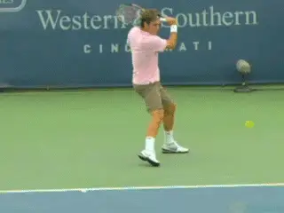
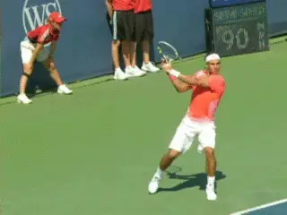
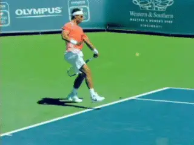
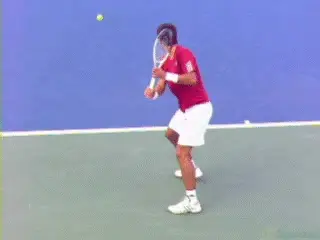
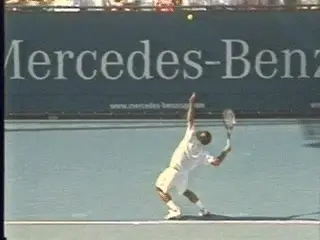
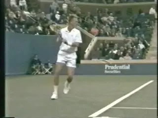
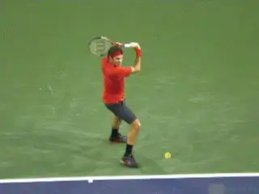

The Pro Slice - Spin Levels¶
John Yandell¶

The slice backhand: fastest spinning pro groundstroke?
It's become an accepted truth in tennis: the heavily spun forehand has permanently changed the modern professional game.
True enough. But what isn't talked about is another equally profound change. This is the corresponding increase in the spin rates in the modern slice backhands. [The slice backhand is actually the fastest spinning groundstroke in the modern game.]
Hard to believe? Read on.
Two things about the slice in the modern game are more apparent. These are the reduced frequency of its use and of its tactical applications.
This is due in part, obviously, to the rise and dominance of the two-handed backhand. But even one-handed players use the slice much less than in the days of wooden rackets, or even in the first few years of the rise of graphite, when players such as McEnroe, Edberg and Becker still attacked the net on a regular basis.
Today, few players approach off the ground, much less off the return. And it appears there are good reasons for this due to the weight and speed of today's topspin passing shots. Today the slice is used primarily from the baseline as a defensive shot, or to change the pace or rhythm, or sometimes the angles and/or contact heights in baseline exchanges.
One question to ask is whether this is an inevitable state of affairs. Could the slice make a comeback as a tactical weapon? If so would this simply require changes in patterns of play and the mentality of the players?

Is there some fundamental limitation to the pro slice in the modern game?
Or would it take major changes in technique? Or is there something fundamental about the slice in the pro game that prevents any of this from happening?
Spin
Before attempting to even address these questions let's try to understand the changes in the nature of the pro slice, starting in this article with the actual spin levels.
With the modern forehand, much has been made of the incredible levels of spin. This insight is possible due in part to the research pioneered by TPA and also the Advanced Tennis research foundation and the pioneering studies they have done using high speed video. (link for more info on the work of Advanced Tennis.)
Nadal may be the king of forehand spin at an average of 3200rpm (link), but even the so-called "flatter" hitters are generating 50 percent more spin on their forehands than the great players of the 1980s such as Sampras and Agassi. Federer and Djokovic, for example, are averaging 2700rpm plus on their forehands, compared to around 1800rpm for Pete and Andre in 1997. (link.)

The modern slice, spinning faster than the modern forehand.
And true there were players such as Sergi Bruguera and Tomas Muster who were generating spin levels at the approximate level of Nadal, but the heavy spin game had not yet broken through to hard courts and grass. That now seems to have changed for good at the top of the game.
But enough about topspin. What is equally fascinating, if largely unrecognized, is that the levels of spin on the slice backhands have actually shown even greater spin increases over the same period.
In this article I want to report on the somewhat astonishing results of my study of spin levels on the slice backhands of Nadal, Federer, and Djokovic. The fact is that the levels of spin hit by these three top players on their one-handed slices actually exceeds the levels of topspin produced on their forehands - even for Nadal.
That's correct. The average modern slice or underspin groundstroke actually has more total revolutions than the modern topspin forehand.
| Modern Pro Underspin | |||
|---|---|---|---|
| Player | Incidents | Range | Average |
| Roger Federer | 32 | 2100-5300rpm | 3700rpm |
| Rafael Nadal | 22 | 2500-4300rpm | 3700rpm |
| Novak Djokovic | 12 | 2100-3500rpm | 2800rpm |
| Total | 66 | 2100-5300rpm | 3500rpm |
Using the footage in our incredible new High Speed Archive, I looked at over 65 slice backhands hit by the top three players in the world, Novak, Rafa and Roger.
The average was a mind blowing 3500rpm of total spin. As with the topspin data, it's important to note that this figure cannot be considered pure underspin and is a mix of underspin with some sidespin.

Djokovic: lower spin levels, tactical and/or technical differences?
Eventually we hope to be able to separate the sidespin component from the underspin component, just as we hope to separate the sidespin component in the "topspin" forehand. Compared to the forehand, there is probably is a higher sidespin component on many balls, but looking at the footage it is obvious that the preponderance of spin is still underspin.
But whatever the relative components, the total revolutions on the slice backhands are stunning.
Rafael Nadal averaged 3700rpm on his slice backhand. This was about 15% more spin than on his topspin forehand.
Federer's also averaged 3700rpm. In Roger's case, this was 35% more total spin than on his forehand.
What was even scarier about Federer's numbers was the upper end of his spin range. He hit multiple slices that reached well above 4000rpm, including one that measured an amazing 5300rpm.
Comtemplate that for a minute. That is as many total revolutions as any shot we've measured over the last 15 years. It's the equivalent of the heaviest spinning second serves hit by Pete Sampras. (link.) And this was a slice groundstroke.

The pro slice: equivalent spin to a Sampras second serve.
But there is a caveat when we get to Djokovic. Interestingly Djokovic's average was significantly less than Federer and Nadal. Novak uses the slice less than the other two players, so we have fewer incidents. But he averaged 2800rpm of total spin on his slice backhands. That's about 25% less than Federer or Nadal.
Why? There are some interesting tactical and technical differences that may help to explain this, something we'll explore in future articles. And maybe there are wider implications as well.
Perspective
But to put things in greater perspective let's compare these modern slice figures to our original spin data on the slice backhand from the 1997 Open. Let's see how the spin levels on the slice backhand have evolved, and also, make a little broader comparison between the changes in underspin and topspin.
In 1997, we measured the spin on the slice backhands of 10 top players, including players such as Pete Sampras and Petr Korda who used the slice regularly in tactical play. The average rpms on these slice backhands from 1997 was 2400rpm.
| Historical Underspin Comparison | |||
|---|---|---|---|
| Year | **Number of | Range | Average |
| Incidents** | |||
| 1997 | 30 | 1500-3500rpm | 2400rpm |
| 2010 | 66 | 2100-5300rpm | 3500rpm |
This compares with 3500rpm from our current study. So just like the increases in spin on the forehands, the levels of spin on the slice backhand shows a huge jump.
The average amount of spin on the slice backhand increased more than 45% compared to 1997. This is actually a greater percent increase in total spin than in the forehand data.

In 1997 players including Petr Korda averaged 2400rpms on the slice.
Remember we saw that Agassi and Sampras were both below 2000rpm on average on the forehands. But when we include the1997 on players with higher spin levels such as Bruguera, Muster, as well as Jim Courier and Michael Chang, we get a somewhat higher forehand spin average of about 2200rpm.
When we look at Djokovic, Nadal, and Federer we see that their spin rates on the forehand are about 30% higher than that, at a combined average of about 2900rpm. Obviously that is a huge increase. But it is still not nearly as great as the increase in spin on the underspin backhand, which, again was 45%.
The simple fact is that the underspin backhand is on average the fastest spinning ground shot in the pro game, spinning faster on average than Nadal's forehand. And in the last 15 years, the levels of spin on that shot have increased more than on any shot in the game.
Again to compare with the forehand, at 3500rpm on average, the underspin slice of the top three players actually spins faster than Nadal's 3200rpm forehand average.
So is that a good thing? Is it a necessary thing? And how do the players produce the stroke technically to generate all that spin? A lot of talk among coaches revolves around these technical changes and how they may relate to the uses and tactical effectiveness of the slice.

So what are the elements in and the meaning of modern slice technique?

John Yandell is widely acknowledged as one of the leading videographers and students of the modern game of professional tennis. His high speed filming for Advanced Tennis and TPA have provided new visual resources that have changed the way the game is studied and understood by both players and coaches. He has done personal video analysis for hundreds of high level competitive players, including Justine Henin-Hardenne, Taylor Dent and John McEnroe, among others.
In addition to his role as Editor of TPA he is the author of the critically acclaimed book Visual Tennis. The John Yandell Tennis School is located in San Francisco, California.
← The Pro Slice and Your Slice | Advanced Tennis Index | Stroke Components →